Class 03 HW :: Experimentation with Map() + BlinkM (Tues Feb 12 2014)
This week I received my BlinkM RGB LED light and a few other bits from Sparkfun. Just to play around with the parameters of the light and understand what I can change with user input, I wrote an Arduino script that allows the user to input a number 0-5 which in turn changes the animation speed of the lights. I played around with the Arduino Library for Processing (and Firmata) because I assumed I needed to pull in the keyboard user input with Processing then send the commands to Arduino to re-write the BlinkM. But! I could code the keyboard inputs in Arduino using the Serial functions. The BlinkM data sheet was very helpful in figuring out how to change the speed.
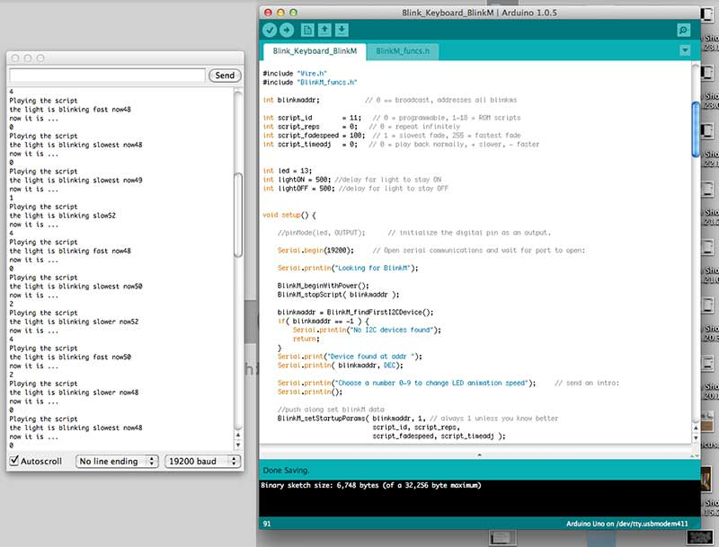
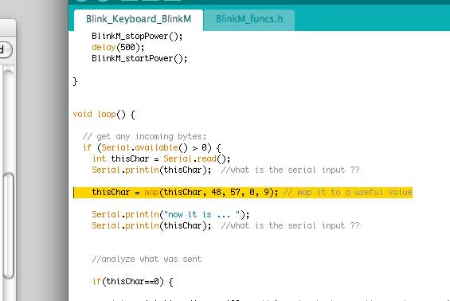
My next steps will be outlining a few ranges of user inputs and the resulting animation alterations, then mapping those values together. I think a variety of these little guys responding to a few different inputs could be pretty sweet. And the Map() function which in Arduino and Processing are both primarily the same, was very helpful in getting my inputs data to register with my necessary output controls.
Check out video here.
Class 02 HW :: Experimentation with Sin and Cos + Voronoi (Tues Feb 04 2014)
Been obsessed with Voronoi diagrams and Delaunay triangulation ... added some Sin and Cos play to get some interesting patterns and repetition
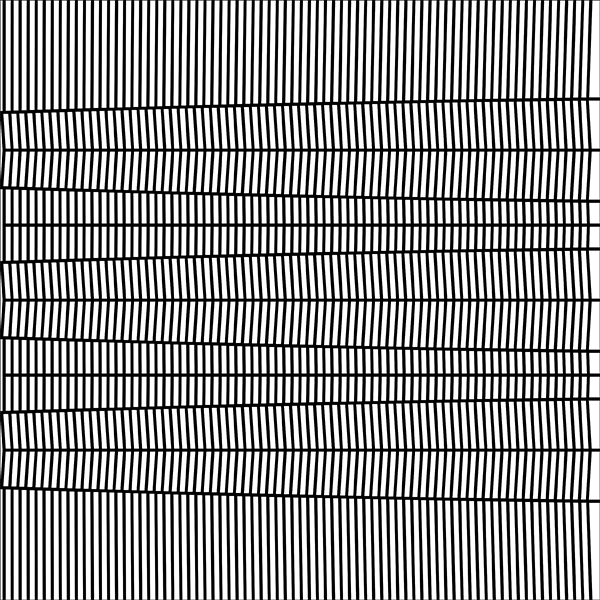
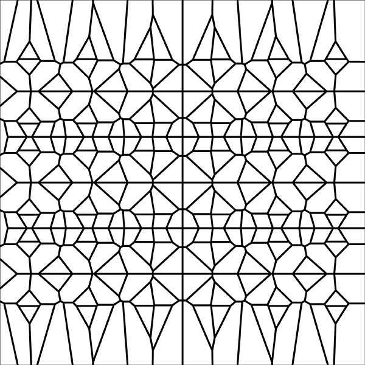
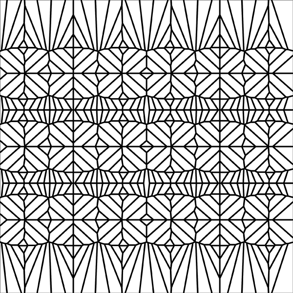
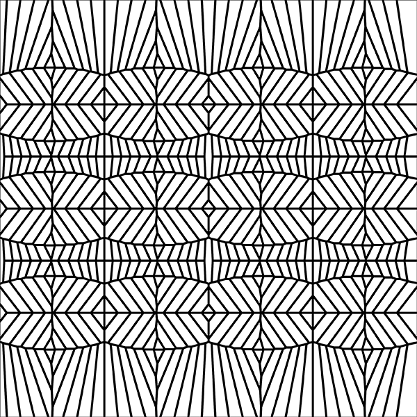
Class 02 :: Making Stuff Move (Thurs Jan 31 2014)
Simple code to animate movement across the stage, based on mouse movement, etc. Making sense of it all.
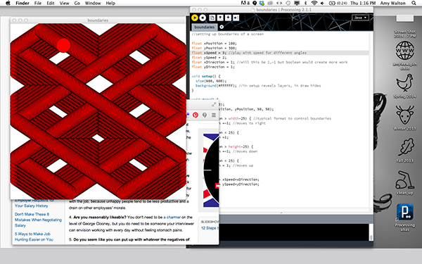
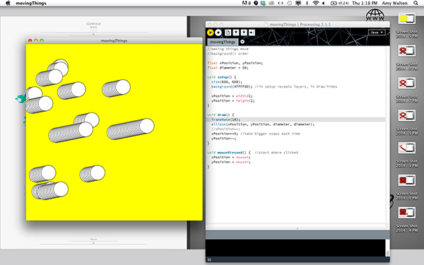
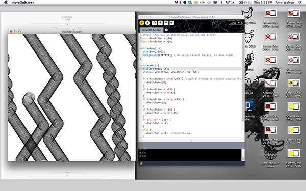
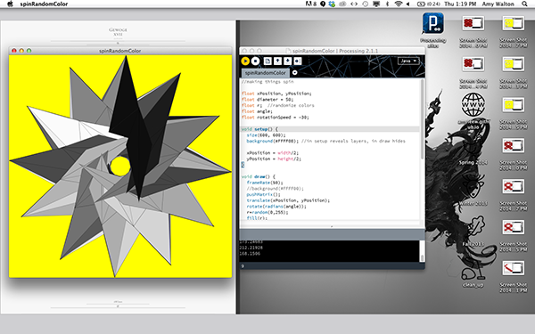
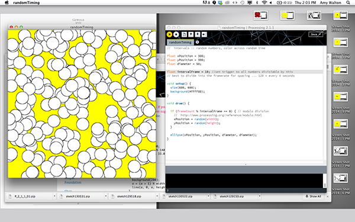
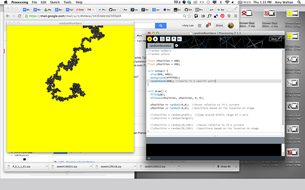
Class 01 HW :: Experimentation 2 (Wed Jan 29 2014)
Processing tests with just Curves and Vertexes


Buy Normals (Wed Jan 29 2014)
N O R M A L S : O U T from N O R M A L S on Vimeo.
N O R M A L S is a book series of design fictions, hyperlinked stories, and neo-brutalist graphic novels.
A limited edition box set is now available for pre-order at http://buy.normalfutu.re
More about N O R M A L S at http://normalfutu.re
Video + Music by N O R M A L S
With the help of Niels Adde
Delineating the Future – an interview with N O R M A L S
Class 01 :: Experimentation (Mon Jan 27 2014)
Processing tests of Curves and Vertexes with Noise and Random